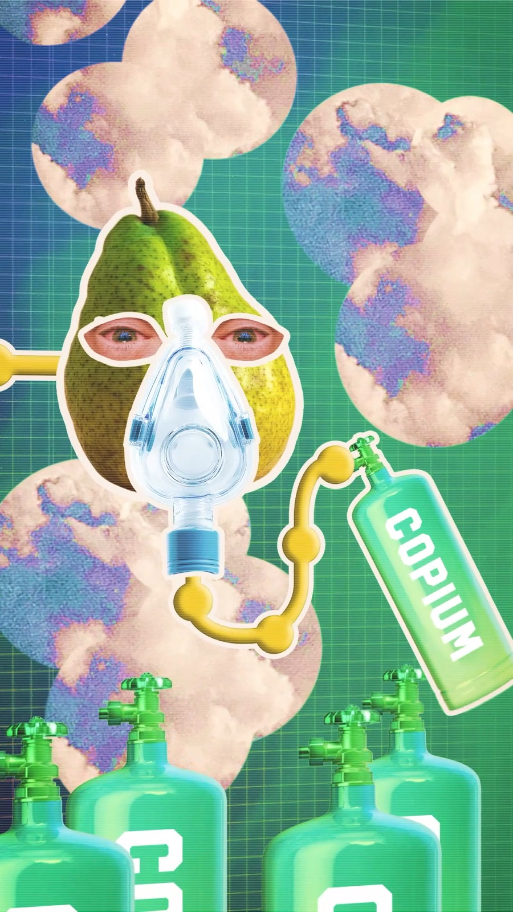
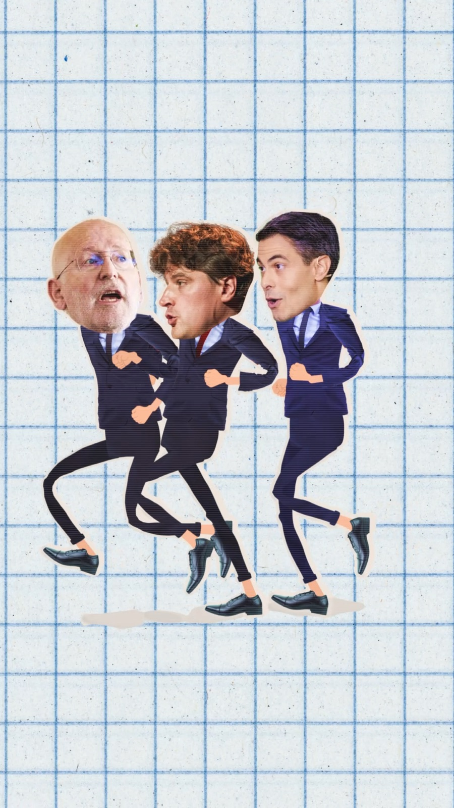
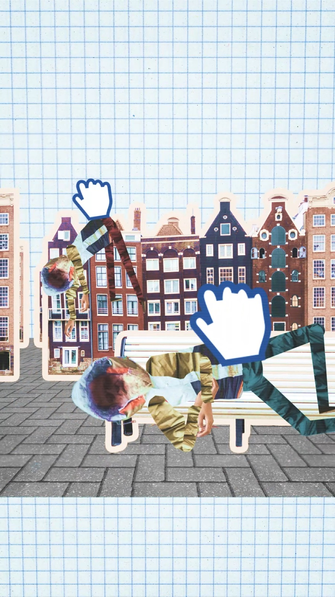
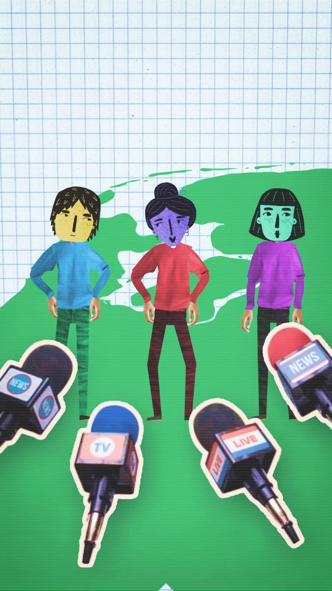
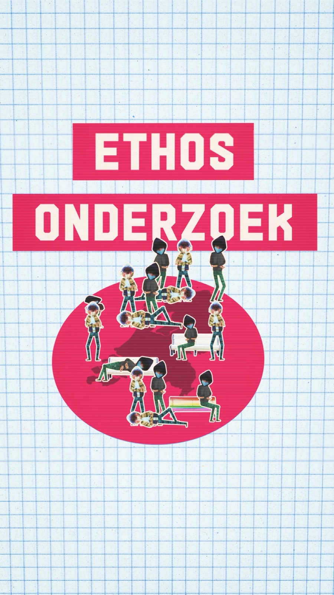
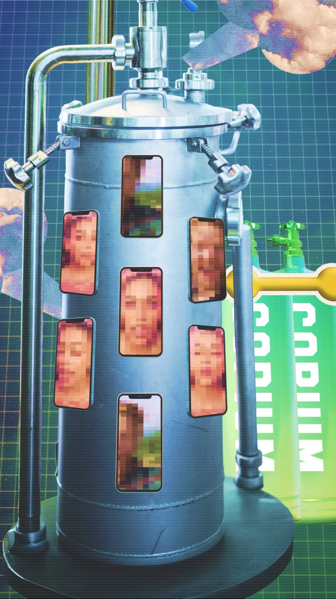
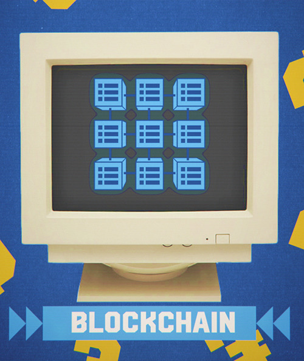
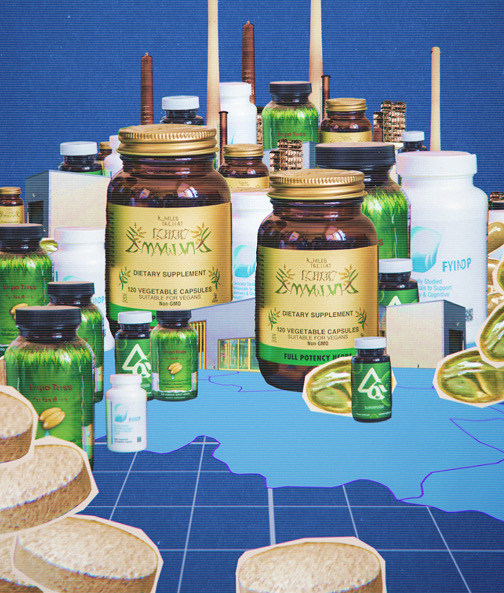

Rewind
Al drie jaar maken we voor REWIND inhoudelijke animaties die actuele journalistiek helder, aantrekkelijk en herkenbaar maken voor jongeren.
Samen met de redactie vertalen we iedere week complexe nieuwsthema’s naar sterke visuele verhalen voor TikTok, Instagram en YouTube.
De uitdaging
REWIND is het journalistieke socialkanaal van HUMAN en de NPO. Iedere week behandelt de redactie actuele onderwerpen die jongeren raken, maar die zich niet altijd eenvoudig laten uitleggen in een korte video.
Tegelijkertijd verschijnen die verhalen in feeds vol snelle beelden, meningen en algoritmische prikkels. Goede journalistiek moet daar niet alleen inhoudelijk kloppen, maar ook direct de aandacht trekken en vasthouden.
Hoe maak je complexe onderwerpen toegankelijk zonder ze plat te slaan — en hoe zorg je dat ze zichtbaar blijven tussen alle socialmedia-ruis?


Ons inzicht
Jongeren haken niet af op moeilijke onderwerpen, maar wel op beeld dat niets toevoegt.
Een animatie moet daarom meer doen dan een gesproken tekst illustreren. Beeld kan verbanden zichtbaar maken, abstracte informatie concreet maken en precies op het juiste moment voor inzicht zorgen.
Daarom beginnen we niet met de vraag hoe iets eruit moet zien, maar met: wat moet iemand begrijpen en wat kan beeld doen om daarbij te helpen?


Onze keuze
We zitten regelmatig met de redacteuren aan tafel en denken al vroeg inhoudelijk mee.
Samen zoeken we naar de kern van het onderwerp, bepalen we welke informatie echt nodig is en onderzoeken we waar animatie het verhaal sterker kan maken. Soms is dat een visuele metafoor, soms een heldere uitleg of een onverwacht beeld dat blijft hangen.
Zo ontstaat de vorm niet pas nadat het verhaal af is. Inhoud en beeld ontwikkelen we naast elkaar.


Wat we maken
Voor REWIND maken we wekelijks animaties en grafische vormgeving voor journalistieke video’s op TikTok, Instagram en YouTube.
Ieder onderwerp krijgt een eigen visuele oplossing, terwijl kleur, typografie, beweging en toon samen zorgen voor een herkenbaar gezicht.
Daarnaast ontwikkelden we een set templates waarmee de redactie zelf snel nieuwe content kan maken binnen de visuele stijl van REWIND.


Het effect
In een aantal jaar tijd is REWIND uitgegroeid tot een snelgroeiend journalistiek kanaal dat de beoogde jonge doelgroep weet te bereiken.
De wekelijkse samenwerking geeft de redactie ruimte om snel op actuele onderwerpen in te spelen, terwijl de animaties en templates zorgen voor visuele kwaliteit en herkenbaarheid.
Zo kan REWIND complexe journalistiek toegankelijk maken zonder de inhoud te versimpelen.